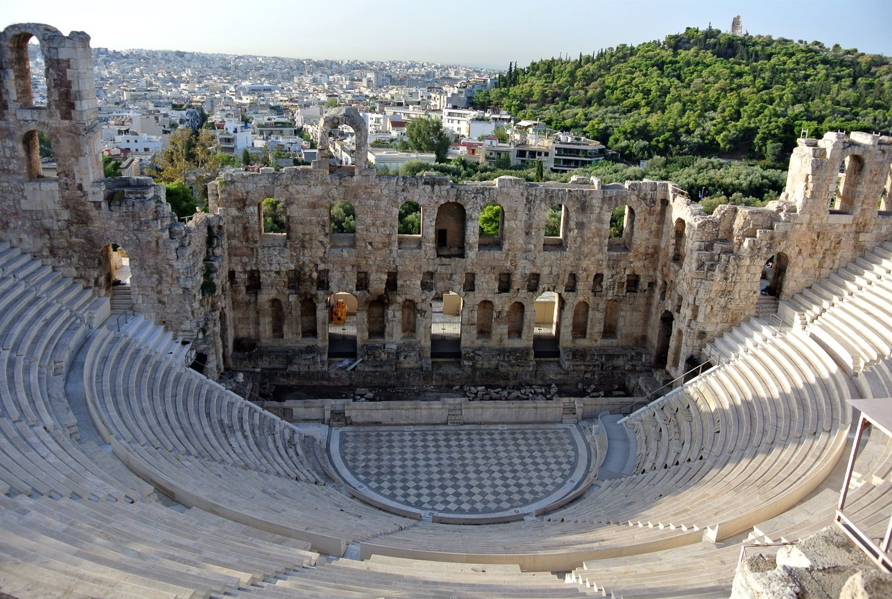

建筑在建筑之上
文/图 刘莎伦
绘画只是我的起点，对于我，轻而易举
设计是生活的总结和归纳
建筑为塑造理想梦幻的人生
哲学是追寻的终点
信仰是灵魂的延伸...
建筑是一个地方的名片，是一段永恒的美妙之梦，是一曲诗之乐章，是一种无边无际的想象，是一股联系过去与未来的情怀，是一艘驰向末名彼岸的航船，是一本永远读不完的书...
建筑必须用眼睛去欣赏，用心灵去感受，用画笔去速写，以相机去拍摄。或者用数字去丈量。
建筑，如何能用文字去描述?那高低错落，层次重叠，纵深交织，光影幻迁...?美的感受，如何以语言去表叙?
还好，建筑与文学有共同的深远和含韵。一种，用视觉空间去感受生命的伸展，与历史和未来相连。另一者，尝试调动想象的飞翼，在抽象里，寻求具象的形体与情节。
对于我这个远行者，遗留在记忆里最大的冲击，是建筑，一个城市或地方的性格都凝聚在此。
那种凝聚的思想，迫使我试图以抽象的文字，去整理与清晰，具象的建筑的形态。
有人喜欢描述旅途，一段历史、典故、传说、故事、人物、经典，甚至是诗，以及美食、购物...那是具象的旅行。
我一向不想写游记或流水日记。晃晃而行，随意走动，常常不知道自己去过的地方的名字，街道、商店、区域、乡村、城巿，甚至国家的名称。久而久之，记忆里只留下枝枝丫丫，模模糊糊，大凡是关于建筑，一个城市恒久的性情。
旅行对于我，是抽象的情绪。
小时候，对自己说，长大了要盖房子。房子代表的是故事的构造，组合了新奇的内在，它可以无限延伸，无穷向往...
曾经创作过一组画，以刮刀和色彩堆砌，似建筑，又非具体形状的建筑，透明、重叠、重新组合，迷茫、迟疑、上色后再刮掉...
黄昏时刻，华灯初放，曾经是我一天里最喜欢的时刻，沿着窄窄的，弯弯曲曲的街道与台阶，一点一点地向上爬行，这是回家的路。透过有著大理石雕凿的窗框，半掩的百页窗，能看见室内桔黄的灯光，甚至吊灯的形状。偶而传出的人声与晚餐的香味...这样的感觉充满温馨又孤独。
建筑与情感相融，成为迷茫、模糊、不能确定的一部分，无法用具体的细微去描述。
没有带入人的情感的建筑，只是冷冷的物质，土、石头、水泥、钢材、与玻璃。
后来，又画了另一组系列，依然与建筑有关。刻画得极为细腻，用中国的毛笔小狼豪去画油画，一层一层不停地向上重叠，远看是极其真切的实景，近看则为许许多多的小笔触飞舞、跳动...
没有人出现在画中，但是，人的痕印无处不在，角落的一顶遮阳帽、椅子扶手上的一件罩衫、轻响的风铃、水漫过水堤的涟漪...建筑是构成这一切的联系，也是组成温暖气息的所在。
在每一个转角、每一道长廊、每一扇窗子、每一个台阶的上下之间，心绪随着微风在其间穿梭...我可以自由自在的在自己臆想的空间世界里飘浮，也可以仼意增加或删改空间为感觉所需。一切都是那么的真实，不旦有具体的形状，有真切的光和影子，有风拂面而来的舒意，有温暖的生活的细节痕迹...但是，它又并非真实存在。
很少有人能够将梦幻变成现实。但一百多年前，德国有一位热爱艺术，心智拒绝长大的国王，在一处雪峰巅顶，建立了一座模仿中世纪的美仑美奂的童话城堡...
他一生未婚，与他的医生挚友，同时也是他的随从相伴。结局是，他俩双双淹死在湖泊里。历史学家推侧，因为他的不务正业，为政权而不容，所以被暗杀...
罗马建筑的辉煌与一位生来就昰天生艺术家的罗马皇帝的贡献不无关联，他浸醉於艺术，神经兮兮，耗尽国库，把罗马建成人间乐园。自己的结局依然是惨烈...
艺术家通常不会是个好管理者，更非统治者。
唐朝皇帝李冶，曾经是个叱剎风云的少年将才，但很快的厌倦政治，而后成为终日以诗曲戏剧舞蹈为伍的皇帝，扬贵妃恰巧是个有才情的知音和相同兴趣者，才成为其贵妃。至少我是这么理解。
设计天才高第，花尽一生心血设计的人类建筑经典----巴塞隆那的圣家堂大教堂，己经建造了一百多年。我在西班牙的时候，据说可能还得再建造一丶两百年，让我渺茫得近乎绝望。好在，最近有报道说，终于有望在2026年完工，与开工时间时隔144年，正好碰上高第过世百周年。
高第是一位极其虔诚的基督徒，他清楚上帝在他生命中的召唤，尽其一生都在思考和探索生命的奥秘与信仰的真谛，试图通过圣家堂这部巨作告示人间，宇宙与上帝的神圣奥妙。后人对于他呈现的超凡才能的评论是：更好的解释莫过於他走近了上帝，是上帝把他塑造成一个神秘的天才，一个虔诚的学者，一个活的发明家，而他本人却是一个非常谦卑的人，是神力扎根在他的内心深处。他所拥有的巨大的创作天赋，连他自己也感到吃惊。他的一生都是在充分地享用这份独特的天赋，这种天赋把他推到了神的面前，使他内心深处一直感到是神的家族的一个成员。
如果问我最喜欢和敬重的艺术家?那一定是天才高第!身临其境，我无力拍摄他的任何建筑作品，无力拍下那样的宏伟壮丽与神亲近的神秘伟大!
很年轻时，我在一间很具规模的建筑设计院从事室内设计工作，上司鼓励我转行做纯粹的建筑设计...
很多年以后，很多人对我说，我离开得早了，那里的设计师，后来每一位都成为百万、千万富翁...我竟然一点都没有遗憾的感觉。
再后来，想不到我成为培养和帮助未来建筑师的导师，想从事建筑设计的学生无一不进入世界最顶尖的大学!
我主张的现代建筑设计，是以最少的材料，最简易的人工，设计制造出最实用，同时兼具美观的房子。浪费资源和人力是一种罪恶。
希望若干年后，学生当中，有人真正能从实践与思考中体会到肩负的人文与历史使命。
对许多人来说，建筑设计这个受人尊敬的职业，在机遇里，只是名利兼收的工作。
对我而言，建筑有迷宫一样的牵引力，随意就可以进入充满迷幻的未知世界。在时间与空间的顾盼回首间，思想、沉湎。
绘画只是我的起点，对于我，轻而易举。设计是生活的总结和归纳，建筑为塑造理想梦幻的人生，哲学是追寻的终点，信仰是灵魂的延伸...
（10/21/2013於巴黎)